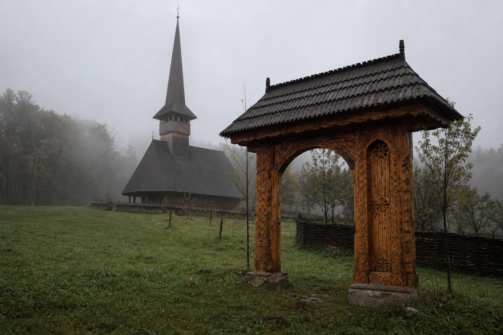
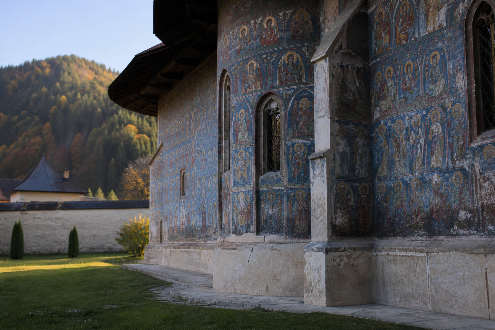

Northern Romania
Nordul. Maramureș, Bucovina, northern Moldavia, and the high Carpathians. Not a circuit. The part of the country where the roof is still the first thing you see, and winter is a fact before it is a picture.

The ridge and the names
The Carpathians do not stop at a county line. They hook through the north and make valleys that keep their own weather. People say Maramureș, Bucovina, Moldova de nord — names that sit more steadily than any tourist region. One ridge looks at wood and șindrilă. A few hours east, the next valley looks at painted brick. The language is the same. The skyline is not. Ask which valley before you decide you have understood the north, the same habit the villages page asks for the sat.
Maramureș
Wood. The poartă can be taller than the house, carved with rope and sun and a short prayer — that monument is on gates. The church roof rises two or three times the nave; those buildings have their own page — wooden churches. Pasture looks painted until you notice the mud. The Iza and the Mara are small rivers. The Tisa holds the northern edge. A yard here is still a yard: gate, woodpile, well, a bench under the eaves. That arrangement is mapped on the house. Sunday still fills the road toward the biserică. The rest of the week the lane can be a dog and a man walking to the next gate.
Plenty of gates stay locked from autumn to the winter feasts. People work in Italy or a city that pays on a different clock, and they come back for Christmas, a funeral, the hram. New roofs, empty rooms. The north is not a museum of the village. It is the ordinary fact, only higher up and colder: the sat still holds the feasts, and much of the week it holds whoever stayed.
Bucovina and northern Moldavia
Further east the churches change material. Stone and plaster, and on the famous ones a painted exterior meant to be read from the yard — Voroneț, Moldovița, Sucevița, Humor, Arbore. That use of the wall is the lesson why the walls are painted. Ștefan cel Mare’s century sits under those ridges; the men page names him without turning the valley into a statue garden. Suceava and the older seats matter as memory. The living point is smaller: a ridge church that still works as a landmark and a Sunday, and villages that send people away the same way a Maramureș village does.
Bucovina is a name that has moved. The painted monasteries stand in what is now Romania’s north. Northern Bukovina, around Cernăuți, went another way in the twentieth century — that line is on borders. This page stays with the yards and the walls that are still walked past on an ordinary Sunday.

Yard, winter, water
A northern sat is the same living unit as elsewhere: the road, the gate, neighbors who know your business. The difference is timber and weather. Snow sits on the shingle earlier. Ice at the well. A woodpile that is the household’s argument with January — that life is on winter. The rooms that face north stay closed; the family lives by the sobă. Cloth work comes back under the lamp once the outdoor hurry slows.
The Someș waters the northwest. The Siret and the Bistrița run the Moldavian side. The Prut is the eastern edge. None of these are the Danube, and they do not need to be. A valley is often the river’s first, and the town sits where a bridge or a ford made sense — the habit on rivers. You do not need a complete list of tributaries. You need which water a story is standing beside.
Not one north. Maramureș shows you the tall gate. Bucovina shows you the painted wall. Northern Moldavia holds both the monastery ridge and the ordinary maize road. The Carpathians hold all of it, and outlast the map.